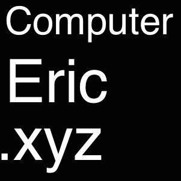

<!-- Language Selector -->
<center>语言/Language :<select onchange= "onLanChange(this.options[this.options.selectedIndex].value)">
    <option value="0" selected> 简体中文 </option>
    <option value="1"> English </option>
</select>
</center>

<!-- Chinese Version -->
<div class="zh">
	<blockquote>
		一个并没有什么卵用的天才。
	</blockquote>
    <center>
    	
    </center>
    <p>生日：2003年2月4日</p>
</div>

<!-- English Version -->
<div class="en">
   <blockquote>
   		An useless genius.
   </blockquote> 
   <center>
   	
   </center>
   <p>Birthday: Feb 4th 2003</p>
</div>

<!DOCTYPE HTML PUBLIC "-//W3C//DTD HTML 4.01 Transitional//EN">  
<html>  
  <head>  
    <title>useragent.html</title>  
      
    <meta http-equiv="keywords" content="keyword1,keyword2,keyword3">  
    <meta http-equiv="description" content="this is my page">  
    <meta http-equiv="content-type" content="text/html; charset=UTF-8">     
      
  </head>  
  <script type="text/javascript">  
        //获是userAgent信息，里面表示浏览器的相关信息  
        //navigator.appVersion获得版本号的信息  
        var sUserAgent = navigator.userAgent;  
          
          
        //为MinMoz准备的,比较版本号,因为它的版本号有与从不同  
          
        function compareVersions(sVersion1, sVersion2) {  
          
            var aVersion1 = sVersion1.split(".");  
            var aVersion2 = sVersion2.split(".");  
              
            if (aVersion1.length > aVersion2.length) {  
                for (var i=0; i < aVersion1.length - aVersion2.length; i++) {  
                    //差的位数就放入0  
                    aVersion2.push("0");  
                }  
            } else if (aVersion1.length < aVersion2.length) {  
                for (var i=0; i < aVersion2.length - aVersion1.length; i++) {  
                    aVersion1.push("0");  
                }      
            }  
              
            for (var i=0; i < aVersion1.length; i++) {  
                //比如版本号的大小  
                  
                if (aVersion1[i] < aVersion2[i]) {  
                    return -1;  
                } else if (aVersion1[i] > aVersion2[i]) {  
                    return 1;  
                }      
            }             
            return 0;         
        }  
          
        //查看是不是IE的浏览器,同时要满足以下两个要求,但没有考虑到Opera  
          
        var isIE = sUserAgent.indexOf("compatible") > -1 && sUserAgent.indexOf("MSIE") > -1;   
                    
        //下面就判断是那个版本的IE,还没有加入IE7和IE8我这没有,不知道版本号....那位能帮我加一下              
        var isMinIE4 = isMinIE5 = isMinIE5_5 = isMinIE6 = false;  
          
        if (isIE) {  
            var reIE = new RegExp("MSIE (\\d+\\.\\d+);");//用正则表示式去获得版本号  
            reIE.test(sUserAgent);  
            var fIEVersion = parseFloat(RegExp["$1"]);  
          
            isMinIE4 = fIEVersion >= 4;      //true or false  
            isMinIE5 = fIEVersion >= 5;  
            isMinIE5_5 = fIEVersion >= 5.5;  
            isMinIE6 = fIEVersion >= 6.0;  
        }  
          
        //查看是不是MinMoz的浏览器  
          
        var isMoz = sUserAgent.indexOf("Gecko") > -1;  
        //下面就判断是那个版本的FF  
          
        var isMinMoz1 = sMinMoz1_4 = isMinMoz1_5 = false;  
  
        if (isMoz) {  
            var reMoz = new RegExp("rv:(\\d+\\.\\d+(?:\\.\\d+)?)");  
            reMoz.test(sUserAgent);  
            isMinMoz1 = compareVersions(RegExp["$1"], "1.0") >= 0;  
            isMinMoz1_4 = compareVersions(RegExp["$1"], "1.4") >= 0;  
            isMinMoz1_5 = compareVersions(RegExp["$1"], "1.5") >= 0;  
        }  
        //查看操作系统  
        var isWin = (navigator.platform == "Win32") || (navigator.platform == "Windows");  
        var isMac = (navigator.platform == "Mac68K") || (navigator.platform == "MacPPC")   
            || (navigator.platform == "Macintosh");  
  
        var isUnix = (navigator.platform == "X11") && !isWin && !isMac;  
        //先全部设为false  
        var isWin95 = isWin98 = isWinNT4 = isWin2K = isWinME = isWinXP = false;  
        var isMac68K = isMacPPC = false;  
        var isSunOS = isMinSunOS4 = isMinSunOS5 = isMinSunOS5_5 = false;  
          
        if (isWin) {  
            isWin95 = sUserAgent.indexOf("Win95") > -1   
                      || sUserAgent.indexOf("Windows 95") > -1;  
            isWin98 = sUserAgent.indexOf("Win98") > -1   
                      || sUserAgent.indexOf("Windows 98") > -1;  
            isWinME = sUserAgent.indexOf("Win 9x 4.90") > -1   
                      || sUserAgent.indexOf("Windows ME") > -1;  
            isWin2K = sUserAgent.indexOf("Windows NT 5.0") > -1   
                      || sUserAgent.indexOf("Windows 2000") > -1;  
            isWinXP = sUserAgent.indexOf("Windows NT 5.1") > -1   
                      || sUserAgent.indexOf("Windows XP") > -1;  
            isWinNT4 = sUserAgent.indexOf("WinNT") > -1   
                      || sUserAgent.indexOf("Windows NT") > -1   
                      || sUserAgent.indexOf("WinNT4.0") > -1   
                      || sUserAgent.indexOf("Windows NT 4.0") > -1   
                      && (!isWinME && !isWin2K && !isWinXP);  
        }   
        //没玩过苹果机....  
        if (isMac) {  
            isMac68K = sUserAgent.indexOf("Mac_68000") > -1   
                       || sUserAgent.indexOf("68K") > -1;  
            isMacPPC = sUserAgent.indexOf("Mac_PowerPC") > -1   
                       || sUserAgent.indexOf("PPC") > -1;    
        }  
  
        if (isUnix) {  
            isSunOS = sUserAgent.indexOf("SunOS") > -1;  
          
            if (isSunOS) {  
                var reSunOS = new RegExp("SunOS (\\d+\\.\\d+(?:\\.\\d+)?)");  
                reSunOS.test(sUserAgent);  
                isMinSunOS4 = compareVersions(RegExp["$1"], "4.0") >= 0;  
                isMinSunOS5 = compareVersions(RegExp["$1"], "5.0") >= 0;  
                isMinSunOS5_5 = compareVersions(RegExp["$1"], "5.5") >= 0;  
            }  
        }  
          
        window.onload = function(){  
            //这是我的环境  
            if(isMinIE6){  
                 alert("当前浏览器是IE");       
            }  
            if(isWinXP){  
                 alert("当前系统是Windows XP");    
            }             
        }  
      
  </script>  
  <body>  
     
  </body>  
</html> 


<!-- Handle Language Change -->
<script type="text/javascript">
    // get nodes
    var $zh = document.querySelector(".zh");
    var $en = document.querySelector(".en");
    var $select = document.querySelector("select");

    // bind hashchange event
    window.addEventListener('hashchange', _render);

    // handle render
    function _render(){
        var _hash = window.location.hash;
        // en
        if(_hash == "#en"){
            $select.selectedIndex = 1;
            $en.style.display = "block";
            $zh.style.display = "none";
        // zh by default
        }else{
            // not trigger onChange, otherwise cause a loop call.
            $select.selectedIndex = 0;
            $zh.style.display = "block";
            $en.style.display = "none";
        }
    }

    // handle select change
    function onLanChange(index){
        if(index == 0){
            window.location.hash = "#zh"
        }else{
            window.location.hash = "#en"
        }
    }

    // init
    _render();
</script>


{% if site.duoshuo_username %}
<!-- 多说评论框 start -->
<div class="comment">
    <div class="ds-thread"
    {% if site.duoshuo_username == "huxblog" %}
        data-thread-id="1187623191091085319"
    {% else %}
        data-thread-key="{{site.duoshuo_username}}/about"
    {% endif %}

    data-title="{{page.title}}"
    data-url="{{site.url}}/about/"></div>
</div>
<!-- 多说评论框 end -->

<!-- 多说公共JS代码 start (一个网页只需插入一次) -->
<script type="text/javascript">
    // dynamic User hacking by Hux
    var _user = '{{site.duoshuo_username}}';

    // duoshuo comment query.
    var duoshuoQuery = {short_name: _user };
    (function() {
        var ds = document.createElement('script');
        ds.type = 'text/javascript';ds.async = true;
        ds.src = (document.location.protocol == 'https:' ? 'https:' : 'http:') + '//static.duoshuo.com/embed.js';
        ds.charset = 'UTF-8';
        (document.getElementsByTagName('head')[0]
         || document.getElementsByTagName('body')[0]).appendChild(ds);
    })();
</script>
<!-- 多说公共JS代码 end -->
{% endif %}


{% if site.disqus_username %}
<!-- disqus 评论框 start -->
<div class="comment">
    <div id="disqus_thread" class="disqus-thread">

    </div>
</div>
<!-- disqus 评论框 end -->

<!-- disqus 公共JS代码 start (一个网页只需插入一次) -->
<script type="text/javascript">
    /* * * CONFIGURATION VARIABLES * * */
    var disqus_shortname = "{{site.disqus_username}}";
    var disqus_identifier = "{{site.disqus_username}}/{{page.url}}";
    var disqus_url = "{{site.url}}{{page.url}}";

    (function() {
        var dsq = document.createElement('script'); dsq.type = 'text/javascript'; dsq.async = true;
        dsq.src = '//' + disqus_shortname + '.disqus.com/embed.js';
        (document.getElementsByTagName('head')[0] || document.getElementsByTagName('body')[0]).appendChild(dsq);
    })();
</script>
<!-- disqus 公共JS代码 end -->
{% endif %}
